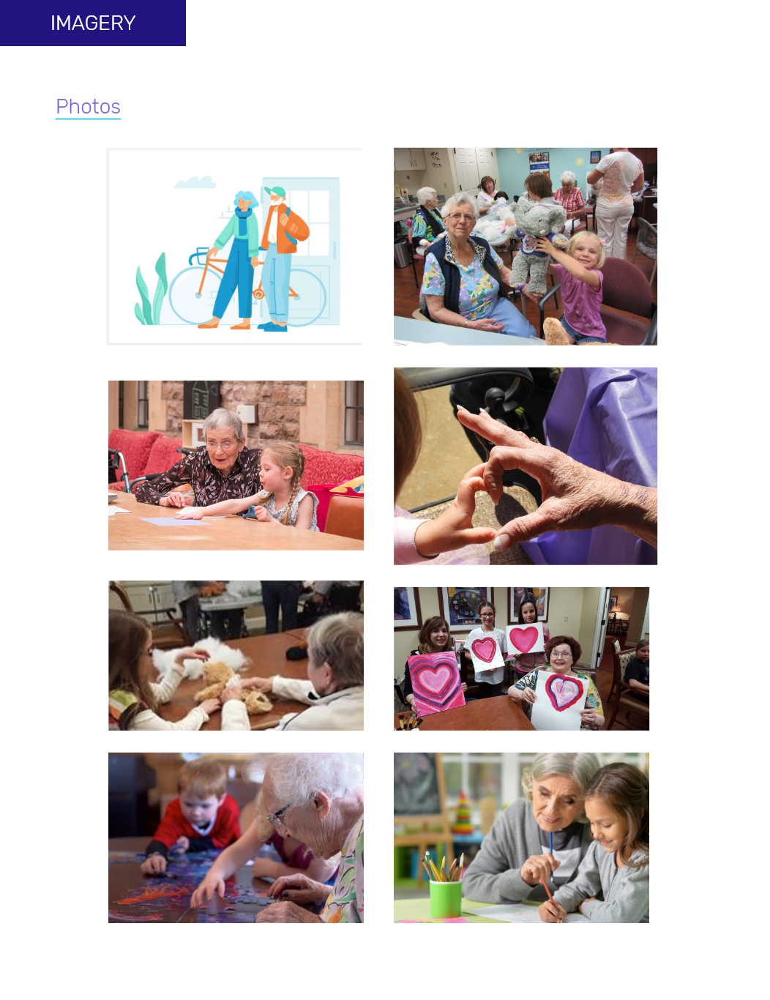
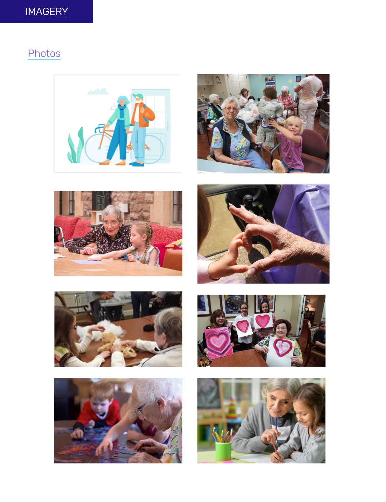

Youth2Seniors Non-Profit Website Redesign
Review, restructure, and redesign of a non-profit's website.

The Problem
Youth2Seniors is a small non-profit that bridges generations by bringing together young volunteers and senior citizens for crafts and activities. The Youth2Seniors website is unorganized, not responsive, and obscured by bad UI. Volunteers and donors are put off by the unprofessional look and feel of the website, which is detrimental to the future success of the organization.
Proposed Solution
Analysis of the current website to influence a redesign of the UI and information architecture. Our goal was to design a responsive, attractive website with an easy registration and donation process that encourages a higher level of community engagement with the organization.
Timeline
3 weeks (July 2019)
My Role
UX/UI Designer and Researcher (group project)
Tools
Adobe XD, Invision, Trello, Miro
BEFORE
AFTER

User Research
We interviewed a few users and stakeholders to get a sense of how different people interact with the site. It was valuable to get insights from Youth2Senior's founder, Adelle, who also created the current website, and learn about the most important aspects of the non-profit from her.
Stakeholder Insights
- Seniors don’t use the website.
- It’s for parents to sign their kids up to volunteer.
- The calendar and registration pages are most important.
- Nobody tracks their volunteer time.
- The rewards program is defunct.
- The website should ideally be fun and engaging, yet professional.
User Insights
Understanding the User
Using our interviews with users and stakeholders, we organized our feedback into an affinity diagram and created a user persona to guide our design decisions.
Feature Prioritization
We brainstormed some features based on feedback we had heard in user interviews. We then organized the features on a matrix to determine which would be the most valuable to include in our MVP.
IA Card Sorting
We used card sorting to find a place or each of the features we planned to include. We also pared down the site, eliminating pages that Adelle had told us were unnecessary or outdated. We then translated this into a user flow.
Sketches & Wireframes
We sketched out a few ideas for our desktop redesign, then created wireframes with Adobe XD. We also made them responsive for mobile and tablet.
HOMEPAGE WIREFRAMES:
Style Guide
<Our style guide was instrumental in applying cohesion and purpose across our designs. Click through the slideshow below to see the full style guide. 

Responsive Mockups
We worked with the style guide to translate our wireframes into high-fidelity, responsive mockups, which we prototyped using Adobe XD.
User Testing & Iteration
We tested our prototype with a few users to gain more insights and work out any problems. Using this feedback, we made the following changes to our design.
We completely changed the color palette of our redesign after some negative feedback during testing. We also realized the colors we chose for our components didn't mesh well together.
We added event details to the calendar page in a larger, more prominent space so users could easily browse events and see all the necessary information before deciding to sign up.
We made the selector boxes on the Donate page appear more interactive, because users were confused about whether they were buttons or informational cards.
Hi-Fi Desktop Walkthrough
Final Thoughts
Redesigning vs Starting from Scratch
Although redesigning an existing website was in some ways easier than creating a completely new product or idea, we did find it difficult to prioritize features that the non-profit already had in place. Based on user interviews, we cut out some features (tracking time, rewards program, etc) that Youth2Seniors no longer uses. If we were to build upon this project, we would investigate why people aren't using those features and solve for the users' current needs. Are people simply not interested? Or are those features just difficult to find and/or use?
Designing as a Group
I loved collaborating with my peers on this project and it was great to have multiple minds working on the problem. One challenge we faced was ensuring that our designs meshed, despite splitting the work among the three of us. We each created a couple pages, so it was imperative that we checked in frequently to make sure we were all designing with the same look and feel. Having a set style guide helped with this as well.
Listening to Users
As always, we found it extremely valuable to start out doing user interviews. It's always interesting to see how our preconceived notions as designers are proved wrong time and again by the actual users. For example, we originally thought the website redesign should be very fun and kid-friendly. However, through user research we learned that a professional look and feel was most important, so that people would feel comfortable trusting Youth2Seniors with their kids and donation money.